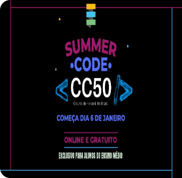
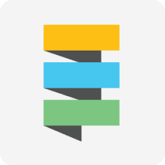

Sobre Nós
-
Sobre o grupo
-
A ideia do grupo é criar um site para incentivar e motivar a mulher dentro da careira de tecnologia, dando opções de cursos, vagas e parte para motivação, para assim, não desistir de seguir a área.

-
Sobre o Summer Code
-
O Summer Code Fundação Estudar é um programa para estudantes do Ensino Fundamental e Ensino Médio aprenderem a programar. A base teórica do programa é o CC50, versão em português do famoso curso de introdução a programação de Harvard, onde o aluno aprende C, Python, e Javascript.

-
Sobre a Fundação Estudar
-
Uma rede que apoia, desenvolve e inspira milhões de jovens brasileiros para que sigam seus sonhos e mudem o mundo. Tudo isso por meio do estímulo à experiência acadêmica de excelência e do apoio ao desenvolvimento pessoal e profissional.